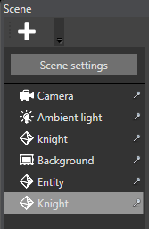

エンティティの追加
初級 レベル デザイナー
シーンを作成した後は、シーンにエンティティを追加して、レベルを構築する必要があります。
シーン エディターからエンティティを作成する
エンティティ ツリーの上にある
 アイコンをクリックします。
アイコンをクリックします。［Create］メニューが開きます。

あるいは、エンティティ ツリーまたはシーン内のどこかを右クリックします。エンティティをシーンに作成する場合は、クリックした場所にエンティティが追加されます。
［Empty entity］を選択するか、またはエンティティ テンプレートを選択します。
エンティティがアクティブなシーンに追加されて、エンティティ ツリーに表示されます。
Tip
アクティブなシーンとは、エンティティが追加されるシーンです。アクティブなシーンを設定するには、エンティティ ツリー (既定では左側) でシーンを右クリックして［Set as active scene］を選択します。

アクティブなシーンは実行時にはどのような影響もありません。
アセットからエンティティを作成する
［Asset view］からシーンにアセットをドラッグ アンド ドロップして、エンティティを追加できます。
エンティティが自動的に作成され、使用したアセットに基づいて必要なコンポーネントと参照が追加されます。たとえば、モデル アセットをシーンにドラッグした場合、そのモデル アセットを参照とするモデル コンポーネントを含むエンティティが作成されます。
Note
対応するコンポーネントのあるアセットをドラッグすることによってのみ、エンティティを作成できます。たとえば、モデル コンポーネントはモデル アセットを使用するので、ドラッグできます。アニメーションには対応するコンポーネントがないので、ドラッグできません。
コンポーネントをセットアップする
コンポーネントは、プロジェクトの目的を定義する特別なプロパティをエンティティに追加します。たとえば、ライト コンポーネントをエンティティに追加することによってライトをシーンに追加し、モデル コンポーネントを追加することによってモデルを追加する、といった方法です。コンポーネントのないエンティティに目的はありません。
コンポーネントをエンティティに追加するには:
エンティティを選択します。
［Property grid］で、［Add component］をクリックして、必要なコンポーネントを追加します。

コンポーネントが追加されます。

新しいコンポーネントのプロパティを設定します。
エンティティを複製する
エンティティをすべてのプロパティと共に複製できます。エンティティを複製し、新しいエンティティのプロパティを変更する方が、最初からエンティティを作成するより時間がかからないことがよくあります。
複製するエンティティを選択します。
Ctrl キーを押しながら、マウスでエンティティを移動します。
エンティティとそのすべてのプロパティが複製されます。
または、エンティティを右クリックして、［Duplicate selected entities］を選択します。

エンティティの名前を変更する
- エンティティを選択し、F2 キーを押します。
- エンティティの名前を入力して、Enter キーを押します。
